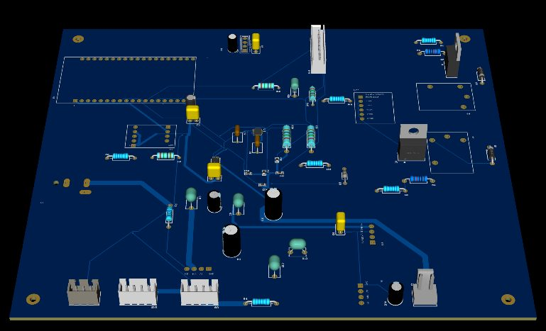
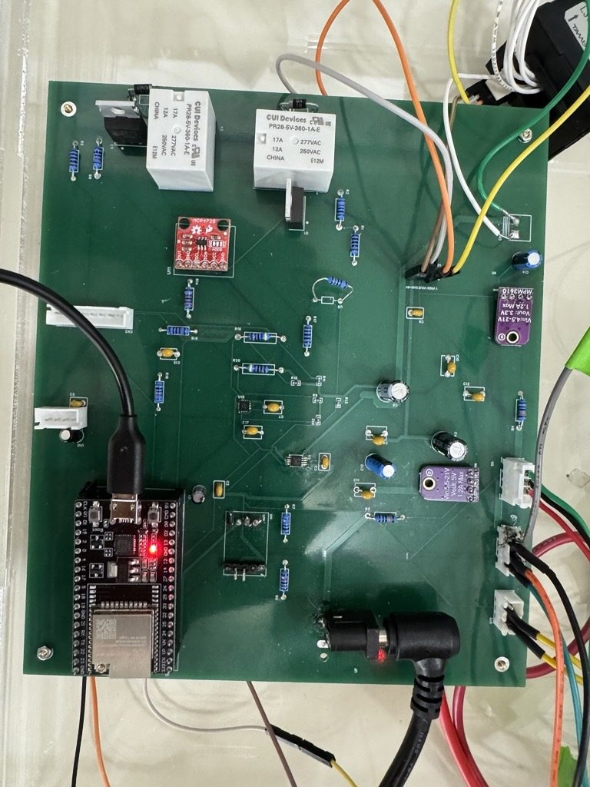
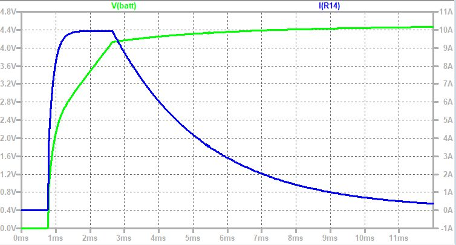
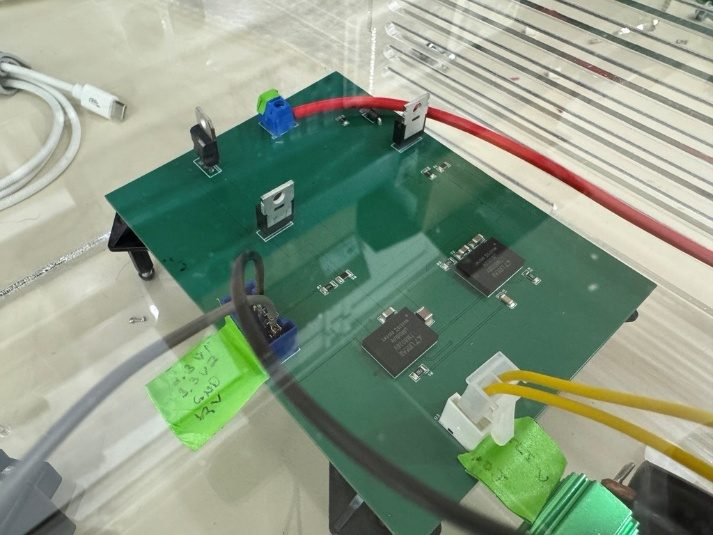
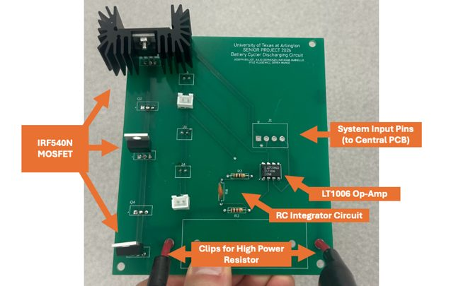

- 5 AUser-set constant current, 0.1 A accuracy
- 2.0–4.1 VUser-set voltage limits
- ≤ 0.06 AMeasured constant-current discharge error
- 0.5%Voltage-sense error at 4.0 V
Overview
The cycler runs off wall power and lets a user set CC/CV charge profiles and constant-current, constant-resistance, and constant-power discharge profiles from an on-device display. It reports C-rate, state of health, depth of discharge, and coulombic efficiency. We met every target specification.
The system is split across three boards: a charging PCB, a discharging PCB, and a central control PCB that ties them together. Each board was built and tested on its own before everything went into one vented acrylic enclosure.
Central PCB (my ownership)
- Selected and justified the core parts: an ESP32-DEVKITC-32UE, MPM3610 buck converters (21 V → 3.3 V / 5 V), and 16 A-rated relays.
- Built the full GPIO map, integrated every subsystem into one schematic, and laid out a four-layer board in EasyEDA with a dedicated ground plane and mounting holes.
- Brought the board up on the bench and integrated it with the charging and discharging boards, so the relays, sensors, LCD, and power rails all worked together in the final system.




Charging
- Two LTM8026 CC/CV modules run in parallel, which splits the load between them and leaves headroom above 5 A. The design was simulated in LTspice before layout.
- An MCP4725 12-bit DAC sets the charge current through a voltage divider, giving about 55 DAC codes per 0.1 A step.
- An AD5141 digital potentiometer sets the charge voltage. Measured output covered 2.05–4.18 V and closely followed the LTspice prediction.
- Software lookup tables, built from bench measurements, map each requested setpoint to the code that hits it most accurately.




Discharging
- The discharger is a MOSFET active load: an LT1006 op-amp with an integrator drives the gates of five parallel IRF540N MOSFETs to sink a set current.
- A FLIR thermal study set a 4 A safe ceiling per MOSFET, and we derated the design to 3 A. That drove the final two-layer, five-MOSFET board with a heatsink and fan.
- A calibrated lookup table converts the requested current into the op-amp control voltage. Constant-current discharge held within 0.06 A of the setpoint from 0.5 A to 3 A, and reached the full 5 A.
- Constant-resistance and constant-power modes run as control loops on top of constant current. A full single-run discharge of a 1000 mAh cell from 3.7 V to 2.9 V reported its total capacity at the end.


| Set current | Measured (bench supply) | Error |
|---|---|---|
| 0.5 A | 0.485 A | 0.015 A |
| 1.0 A | 1.03 A | 0.03 A |
| 1.5 A | 1.52 A | 0.02 A |
| 2.0 A | 2.06 A | 0.06 A |
| 2.5 A | 2.55 A | 0.05 A |
| 3.0 A | 2.98 A | 0.02 A |
Sensing
- Voltage sense uses an INA333 instrumentation amplifier. Current sense uses a Hall-effect sensor, characterized at 12.3 mV/A.
- Both sensors were checked against a multimeter across their ranges. Instrumentation-amp error was 0.5% at 4.0 V, and current-sense error was 0.6% or less from 1.5 A to 2.5 A.
- Built a noise-rejection chain: a relay-open baseline, a trimmed mean of 100 samples, and an exponential moving average.
Firmware & interface
- The ESP32 firmware runs a state machine that handles safety checks, the control loops, and the end-of-charge and end-of-discharge conditions every pass through the main loop.
- The menu on the 20×4 LCD sets charging, discharging, or full cycles, the number of cycles, cutoff voltage, current, and discharge mode. A dedicated button stops everything immediately.
The design followed IEC 62133, UL 2054, UL 62368-1, and OSHA lab-safety practice.